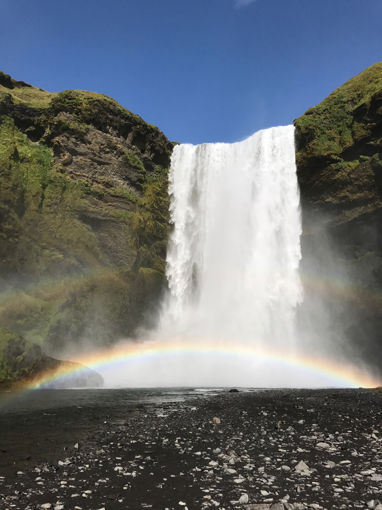
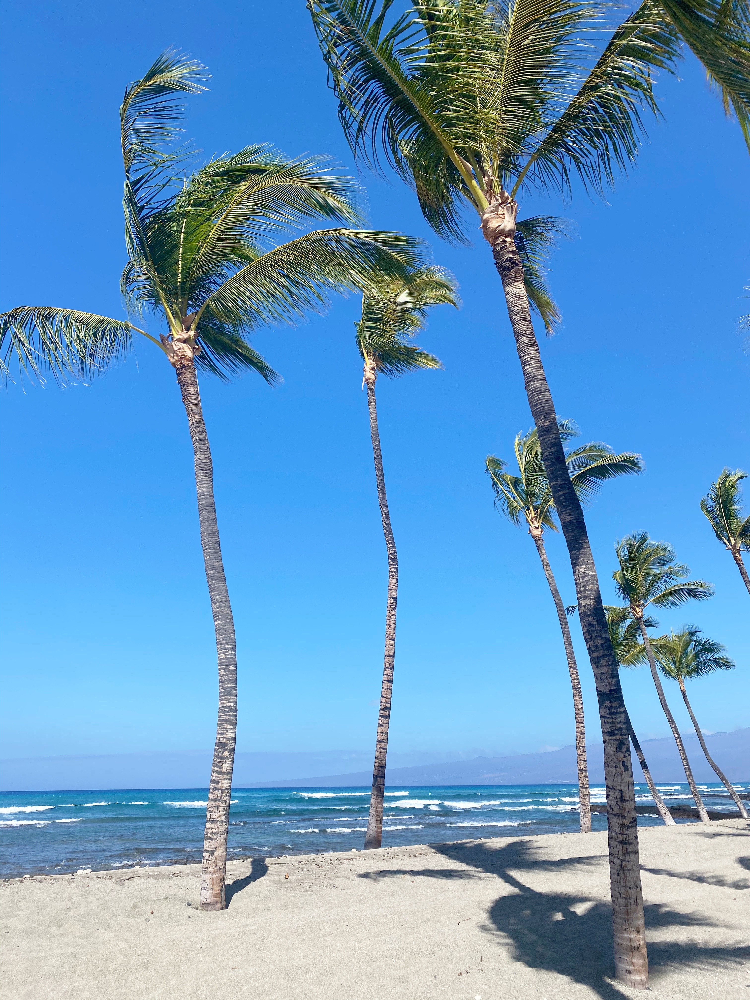
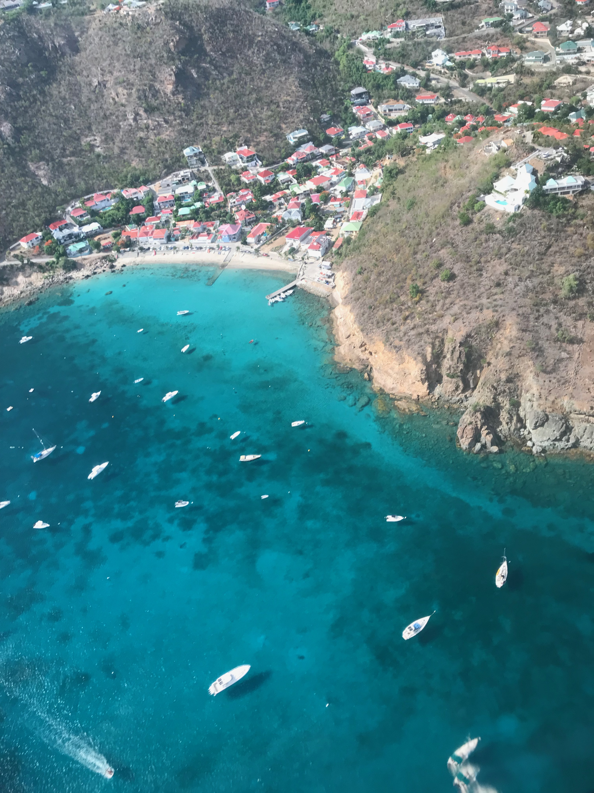
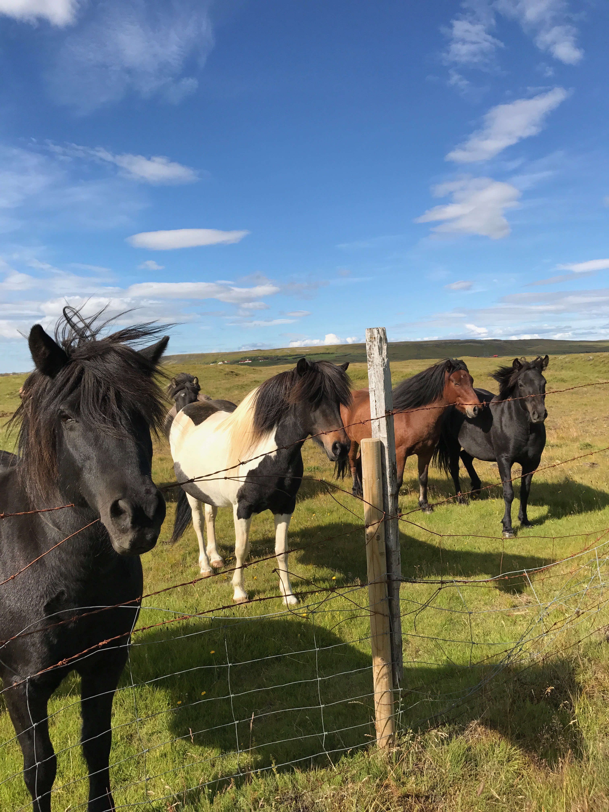
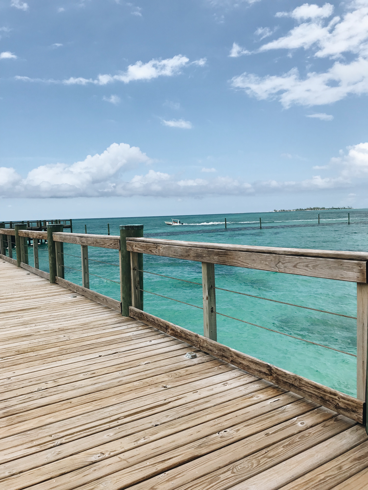

One of my favorite things to do is travel and go on exotic vacations with my family and friends. Some of the best places I've been to include Hawaii, Japan, St. Barths, Mexico, The Bahamas, Iceland, Mammoth Lakes and so many more! Below you can find some of my favorite pictures I have captured while traveling over the past couple years.